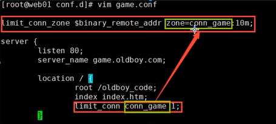

Nginx
Nginx
1 Nginx简介
- Nginx是开源，高性能，高可靠的Http Web服务、代理服务、负载均衡
- 高性能：支持海量并发，有报告表明能支持高达50, 000个并发连接数
- 可靠：服务稳定
- 轻量：占用内存资源少
- Nginx优点
- 轻量级
- 功能模块少（源代码仅保留http与核心模块代码,其余不够核心代码会作为插件来安装）
- 代码模块化（易读，便于二次开发，对于开发人员非常友好）
- 技术成熟，国内公司基本大规模使用
- 适合当前主流架构趋势，微服务、云架构、中间层
- 统一技术栈，降低维护成本，降低技术更新成本
- Nginx采用Epoll网络模型，Apache 采用select模型
- select：当用户发起一次请求，select模型就会进行一次遍历扫描， 从而导致性能低下
- Epoll：当用户发起请求，epool模型会直接进行处理，效率高效，并无连接限制
- 轻量级
- 常用的HTTP Web服务
- Httpd——Apache基金会
- IIS——微软服务器版
- GWS——Google开发
- Openrestry——基于Nginx+lua
- Tengline——淘宝基于Nginx开发
2 Nginx应用场景
正向代理
- 正向代理：在客户端(浏览器)配置代理服务器，通过代理服务器进行互联网访问
反向代理
我们只需要将请求发送到反向代理服务器，由反向代理服务器去选择目标服务器获取数据
返回给客户端，此时反向代理服务器和目标服务器对外就是一个服务器， 暴露的是
代理服务器地址,隐藏了真实服务器IP地址
负载均衡
增加服务器的数量，然后将请求分发到各个服务器上，将原先请求集中到单个服务器上的情况改为将请求分发到多个服务器上，将负载分发到不同的服务器。
动静分离
为了加快网站的解析速度，可以把动态页面和静态页面由不同的服务器来解析，加快解析速度。降低原来单个服务器的压力。
Nginx安装方式
官方源 ——官方编译好的，封装成rpm包，并提供yum源【推荐】
nginx.org 官网有详细过程[http://nginx.org/en/download.html]
配置Nginx官方yum仓库
1
2
3
4
5
6[root@web01 ~]# vim /etc/yum.repos.d/nginx.repo
[nginx]
name=nginx repo
baseurl=http://nginx.org/packages/centos/7/$basearch/
gpgcheck=0
enabled=1安装nginx，必须安装官方源的nginx
1
2
3[root@web01 ~]# yum install -y nginx
[root@web01 ~]# nginx -v # 查询是否成功
nginx version: nginx/1.14.0访问网址 查询是否成功
EPEL源——版本低，功能少
源代码——自己下载源代码，安装复杂，费时
1 | 如果企业之前的Nginx都是通过源码安装，这时需要我们部署新的Nginx服务器，怎么接手通过源代码方式安装 |
Nginx常用命令
查看nginx的版本号
1
nginx -v
启动nginx
1
nginx
关闭nginx
1
nginx -s stop
重新加载nginx
1
nginx -s reload
配置文件语法检测
1
nginx -t
Nginx配置文件
- Nginx主配置文件
1 | /etc/nginx |
- Cgi、Fastcgi、 Uwcgi配置文件
1 | /etc/nginx/fastcgi_params |
- Nginx编码转换映射文件
1 | /etc/nginx/win-utf |
- http协议的Content-Type与扩展名
1 | /etc/nginx/mime.types |
- 配置系统守护进程管理器
1 | /usr/1ib/systemd/system/nginx.service |
- Nginx日志轮询，日志切割
1 | /etc/logrotate.d/nginx |
- Nginx终端管理命令
1 | /usr/sbin/nginx |
- Nginx模块目录
1 | /etc/nginx/modules |
- Nginx默认站点目录
1 | /usr/share/nginx |
- Nginx的帮助手册
1 | /usr/share/doc/nginx-1.14.0 |
- Nginx的缓存目录
1 | /var/cache/nginx |
- Nginx的日志目录
1 | /var/log/nginx |
Nginx主配置文件
nginx.conf是一个纯文本类型的文件，整个配置文件是以区块的形式组织的。每个区块以一对大括号{}来表示开始与结束
CoreModule核心模块
- 从配置文件开始到events块之间的内容
- 主要会设置一些影响nginx服务器整体运行的配置指令，主要包括配置运行Nginx服务器的用户(组)、允许生成的worker process数，进程PID存放路径、日志存放路径和类型以及配置文件的引入等。
1 | user nginx; #Nginx进程所使用的用户 |
EventModule 事件驱动模块
影响Nginx服务器与用户的网络连接
常用的设置包括是否开启对多work process下的网络连接进行序列化，是否允许同时接收多个网络连接，选取哪种事件驱动模型来处理连接请求，每个word process可以同时支持的最大连接数等。
对Nginx的性能影响较大，在实际中应该灵活配置
1
2
3
4events {
worker_connections 1024; #每个worker进程支持的最大连接数
use epool; #事件驱动模型，epoll默认
}
HttpCoreModule http内核模块
Nginx服务器配置中最频繁的部分，代理、缓存和日志定义等绝大多数功能和第三方模块的配置都在这里。
http内核模块
- http全局块
- server 块
1
2
3
4
5
6
7
8
9
10
11
12
13
14
15
16
17
18
19
20
21
22
23
24
25http {
http全局块
...
使用server配置网站，每个Server{}代表一个网站(简称虛拟主机)
server{
listen 80; #监听端口，默认80
server_name localhost; #提供服务的域名或主机名
access_log host.access.1og #访问日志
控制网站访问路径
location / {
root /usr/share/nginx/html; //存放网站 代码路径
index index.php index.html index.htm;
//服务器返回的默认页面文件
//指定错误代码，统一定义错误页面，错误代码重定向到新的Locaiton
error_page 500 502 503 504 /50x.html;
}
第二个虚拟主机配置
server{
...
}
include /etc/nginx/conf.d/*.conf; #其他附加配置文件
}
http全局块
- http全局块配置的指令包括文件引入、MIME-TYPE 定义、日志自定义、连接超时时间、单链接请求数上限等。
server 块
HTTP模块层允许有多个Server块 Server主要 用于配置多个网站
Server块又允许有多个Location Location主要用于定义网站访问路径
location指令详解
1 | location [ = | ~ | ~* | ^~ ] uri{ |
没有修饰符：必须以指定模式开始，如：
1
2
3
4
5
6
7
8
9
10
11
12server {
server_name baidu.com;
location /abc {
……
}
}
那么，如下是对的：
http://baidu.com/abc
http://baidu.com/abc?p1
http://baidu.com/abc/
http://baidu.com/abcde=：用于不含正则表达式的uri前，要求请求字符串与uri严格匹配，如果匹配成功，就停止继续向下搜索并立即处理该请求。1
2
3
4
5
6
7
8
9
10
11
12server {
server_name sish
location = /abc {
……
}
}
那么，如下是对的：
http://baidu.com/abc
http://baidu.com/abc?p1
如下是错的：
http://baidu.com/abc/
http://baidu.com/abcde~： 用于表示uri包含正则表达式，并且区分大小写。1
2
3
4
5
6
7
8
9
10
11
12
13server {
server_name baidu.com;
location ~^ /abc$ {
……
}
}
那么，如下是对的：
http://baidu.com/abc
http://baidu.com/abc?p1=11&p2=22
如下是错的：
http://baidu.com/ABC
http://baidu.com/abc/
http://baidu.com/abcde~*：用于表示uri包含正则表达式，并且不区分大小写。1
2
3
4
5
6
7
8
9
10
11
12
13server {
server_name baidu.com;
location ~* ^/abc$ {
……
}
}
那么，如下是对的：
http://baidu.com/abc
http://baidu..com/ABC
http://baidu..com/abc?p1=11&p2=22
如下是错的：
http://baidu..com/abc/
http://baidu..com/abcde^~：用于不含正则表达式的 uri前，无修饰符的行为，也是以指定模式开始，不同的是，如果模式匹配，那么就停止搜索其他模式了。注意：如果uri包含正则表达式，则必须要有
~或者~*标识
root & alias指令区别
alias是一个目录别名的定义，root则是最上层目录的定义。
若按照上述配置的话，则访问/img/目录里面的文件时，ningx会自动去/var/www/image/目录找文件
1
2
3location /img/ {
alias /var/www/image/;
}#若按照这种配置的话，则访问/img/目录下的文件时，nginx会去/var/www/image/img/目录下找文件
1
2
3location /img/ {
root /var/www/image;
}还有一个重要的区别是alias后面必须要用“/”结束，否则会找不到文件，而root则可有可无
Nginx搭建Web服务器
- Nginx可以作为静态页面的web服务器，同时还支持CGI协议的动态语言，比如perl、php等。但是不支持Java，Java程序只能通过与tomcat配合完成
Nginx配置Web服务器网站【功能同Apache的Tomcat】——接收客户请求端请求，并响应
- 功能：当我们访问game.oldboy.com的时候，访问/oldboy_code/里面的页面代码
1
2
3
4
5
6
7server
{
listen 80;
server_name yangyuxin.top;
index index.php index.html index.htm default.php default.htm default.html;
root /www/wwwroot/yangyuxin.top; # 静态页面所在目录
}
Nginx反向代理
功能：使用Nginx从80端口跳转到8080端口的Tomcat主页
1
2
3
4
5
6
7
8
9
10server
{
listen 80;
server_name yangyuxin.top;
location / {
root html;
proxy_pass http://127.0.0.1:8080; //⭐
index index.html index.htm;
}
}功能：使用 nginx 反向代理，根据访问的路径跳转到不同端口的服务中
1
2
3
4
5
6
7
8
9
10
11
12
13
14
15server
{
listen 80;
server_name yangyuxin.top;
location ~/hello/ {
root html;
proxy_pass http://127.0.0.1:8080;
index index.html index.htm;
}
location ~/world/ {
root html;
proxy_pass http://127.0.0.1:8081;
index index.html index.htm;
}
}
Nginx负载均衡
实现效果：浏览器地址栏输入地址负载均衡，按比例均衡到8080和8081端口
1
2
3
4
5
6
7
8
9
10
11
12
13
14
15
16
17upstream myservername{ //⭐
# ip_hash // 每个请求按访问ip的hash结果分配，访客固定访问一个后端服务器,可以解决session的问题。
server 47.92.38.57:8080 weight=2; //⭐
server 47.92.38.57:8081 weight=4; //⭐
# fair // 按后端服务器的响应时间来分配请求，响应时间短的优先分配。
}
server
{
listen 80;
server_name yangyuxin.top;
location ~/hello/ {
root html;
proxy_pass http://myservername; //⭐
index index.html index.htm;
}
}
Nginx高可用
- 准备
- 两台nginx服务器
- 分别安装keepalived
- 虚拟ip
Keepalived实现高可用
安装
1
yum install keepalived -y
安装之后，在
etc里面生成目录keepalived, 有文件keepalived.conf1
2
3
4
5
6
7
8
9
10
11
12
13
14
15
16
17
18
19
20
21
22
23
24
25
26
27
28
29
30
31
32
33
34
35
36
37
38global_defs { # 全局配置
notification_email {
acassen@firewall.loc
failover@firewall.loc
sysadmin@firewall.loc
}
notification_email_from Alexandre.Cassen@firewall.loc
smtp_server 192.168.200.1
smtp_connect_timeout 30
router_id LVS_DEVEL # ⭐通过这个名字可以访问主机/服务器 /etc/hosts文件下配置这个名字
vrrp_skip_check_adv_addr
vrrp_strict
vrrp_garp_interval 0
vrrp_gna_interval 0
}
vrrp_script chk_http_port { # 脚本配置
script "/usr/local/src/nginx_check.sh"
interval 2 #(检测脚本执行的间隔)
weight 2 # 设置当前服务器权重
}
vrrp_instance VI_1 { # 虚拟IP配置
state MASTER # 备份服务器改为BACKUP
interface eth0 # 网卡
virtual_router_id 51 # 主、备机的virtual_ router_ id必须相同
priority 100 #主、备机取不同的优先级，主机值较大，备份机值较小
advert_int 1 # 心跳时间
authentication {
auth_type PASS
auth_pass 1111
}
virtual_ipaddress {
192.168.200.16 #VRRP H虚拟IP
192.168.200.17
192.168.200.18
}
}检测脚本
1
2
3
4
5
6
7
8
9#! /bin/bash
A= `ps -C nginx -no-header| wc -l`
if [ $A -eq 0 ];then
/usr/local/nginx/sbin/nginx
sleep 2
if [`ps -C nginx --no-header| wc -l` -eq 0];
killall keepalived
fi
fi把两台服务器上nginx和keepalived启动。
启动nginx
1
nginx
启动keepalived
1
systemctl start keepalived.services
Nginx目录索引模块
官方文档使用说明
1 | Nginx 默认是不允许列出整个目录浏览下载 |
访问game.oldboy.com/download，打开目录索引列表
- 在配置文件中添加
Nginx状态监控模块
ngx_http_stub_status_module用于展示Nginx连接状态信息
需要–with-http_stub_status_module配置参数启用【nginx -V 查看】
1
2
3
4
5
6
7
8
9
10Syntax: stub_status;
Default: —
Context: server, location
注意:
- 如果使用restart重置服务，会清空所有的连接数
- reload重载不会清空之前的连接数
- 通过状态监控，可以区分长连接和短连接
vim /etc/nginx/nginx.conf #修改下面参数
keepalive_timeout 0; #将长连接变为短连接
1
2
3
4Active connections # 当前活动的连接数
accepts 4 # 当前的总连接数TCP
handled 4 # 成功的连接数TCP
requests 61 # 总的http请求数
Nginx访问控制
访问控制分类
基于IP的访问控制http_access_modul
- 只允许10.0.0.1访问nginx_status,其他都拒绝
1
2
3
4
5
6
7
8
9
10
11应用——网站后台
# 从上往下依次匹配 满足则停止
# 允许配置语法
Syntax: allow address | CIDR | unix: | all;
Default: —
Context: http, server, location, limit_except
# 拒绝配置语法
Syntax: deny address | CIDR | unix: | all;
Default: —
Context: http, server, location, limit_except基于用户登陆认证http_auth_basic_module
- 身份认证后才可以登录
1
2
3
4
5
6
7
8
9//配置语法
Syntax: auth_basic string | off;
Default: auth_basic off;
Context: http, server, location, limit_except
//配置语法 用户密码记录配置文件
Syntax: auth_basic_user_file file;
Default: -
Context: http，server, location, limit_except1
2
3//需要安装依赖组件
[root@web01 ~]# yum install httpd-too1s
[root@web01 ~]# htpasswd -b -c /etc/nginx/.auth_conf username 123456
Nginx访问限制
- 经常会遇到这种情况， 服务器流量异常，负载过大等等。
- 对于大流量恶意的攻击访问，会带来带宽的浪费， 服务器压力，影响业务，往往考虑对同一个IP的连接数，并发数进行限制
- ngx_http_limit_conn_module 模块可以根据定义的key来限制每个键值的连接数，如同一个IP来源的连接数
limit_conn_module连接频率限制
- 同一IP同一时间只允许有一个连接
1 | $binary_remote_addr 变量的长度是固定的4字节 |
1 | //压力测试 |

limit_req_module请求频率限制
1 | Syntax: limit_req_zone key zone=name:size rate=rate; |
1 | 定义的区域名称为req_zone（zone=req_zone） 分配内存大小为10m（如果限制域的存储空间耗尽了 对于后续所有请求 服务器都会返回503） |
请求/连接限制对比
- 多个请求可以建立在一次的TCP连接之上，那么我们对请求的精度限制，当然比对一个连接的限制会更加的有效，因为同- -时刻只允许一个连接请求进入。但是同一 时刻多个请求可以通过一个 连接进入。所以请求限制才是比较优的解决方案
Nginx原理
master & worker- master进程主要负责对外接收客户端的请求，并将活儿合理的分配给多个worker，每个worker进程主要负责处理请求。
master-workers的机制的优点- 可以使用
nginx –s reload热部署，利用 nginx进行热部署操作 - 每个worker进程是独立的进程，不需要加锁，节省锁带来的开销。
- 每个worker进程互相之间不会影响，一个进程退出后，其它进程还在工作，服务不会中断，master 进程则很快启动新的worker进程。
- 可以使用
设置多少个 woker 合适
- Nginx同redis类似都采用了io 多路复用机制，每个worker都是一个独立的进程， 但每个进程里只有一个主线程，通过异步非阻塞的方式来处理请求，即使是千上万个请求也不在话下。每个worker的线程可以把一个cpu的性能发挥到极致。所以worker数和服务器的cpu数相等是最为适宜的。设少了会浪费qpu，设多了会造成cgpu频繁切换上下文带来的损耗。
发送请求，占用了 woker 的几个连接数？
从用户的角度，http 1.1协议下，由于浏览器默认使用两个并发连接,因此计算方法：
- nginx作为http服务器的时候
1
max_clients = worker_processes * worker_connections/2
- nginx作为反向代理服务器的时候：
1
max_clients = worker_processes * worker_connections/4
从一般建立连接的角度：客户并发连接为1.
nginx作为http服务器的时候：
1
max_clients = worker_processes * worker_connections
nginx作为反向代理服务器的时候
1
max_clients = worker_processes * worker_connections/2
nginx做反向代理时，和客户端之间保持一个连接，和后端服务器保持一个连接。
原文作者: 掘金木匠
原文链接: http://goldcarpenter.github.io/2020/03/29/Nginx基础/
版权声明: 转载请注明出处(必须保留作者署名及链接)